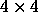
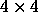

Image Parameters
The results of the imaging pipelines (described below in § 4.4) are summarized in Table 6, and the apertures used for radial profile measurements are in Table 7. For each object, we measure the position, several varieties of the flux, morphological parameters, and a provisional classification. We also include informational flags on each pixel in the images (Table 8) and each object (Table 9) and summary flags and statistics for each field (Table 16). The choice of flags and which measure of flux and shape to use are dictated by the science goals of the SDSS. The catalog contains over 120 parameters and flags measured for 13,804,448 objects. 10,947,783 of these are unique, well-measured astrophysical objects.
The SDSS object catalogs are matched against the FIRST becker95, ROSAT voges99, and USNOA2.0 monet databases; the resulting parameters are described in Table 10.
Images
Each corrected frame is a FITS image for one filter, 2048 columns 1489 rows, with row number increasing in the scan direction. These are the imaging frames with flat field, bias, cosmic ray, and pixel defect corrections applied. A raw image contains 1361 rows, and a corrected frame has the first 128 rows of the following corrected frame appended to it. The pixels subtend 0.396'' square on the sky.
Header information using the World Coordinate System (WCS) calabretta01 allows standard astronomical FITS tools to convert pixel position to (§ 4.2.2).
Binned Images
Each file is a FITS image for one filter,  pixels,
with WCS information. These are the corrected frames with detected
objects removed and binned  pixels.
pixels,
with WCS information. These are the corrected frames with detected
objects removed and binned  pixels.
Mask Frame
Each file is a binary FITS table for one filter. Each row of the table describes a set of pixels in the corrected frame, using mask values described in Table 8.
Atlas Image
For each detected object, the atlas image comprises the pixels in a rectangular area associated with the object in each filter. These are provided through a database, as either a JPEG color image, or as a FITS file for each selected filter.
Color Image
We combine the corrected frames from the and i filters and produce a color image with the filters corresponding to blue, green, and red, respectively. The intensity mapping of each color is adjusted to enhance the appearance of these images. We use the same mapping for all of the color images.